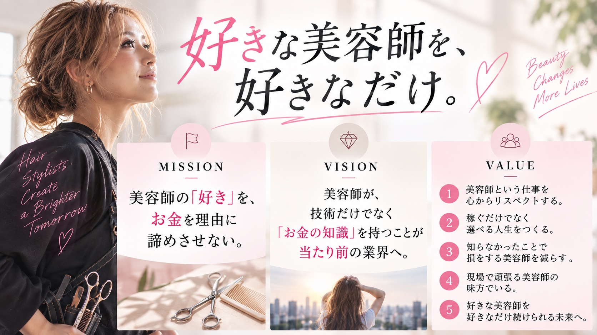
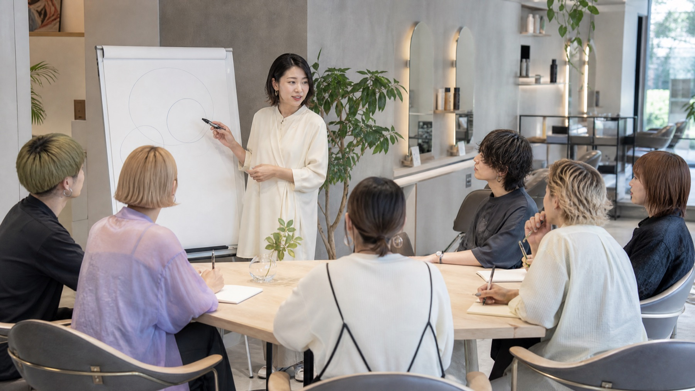
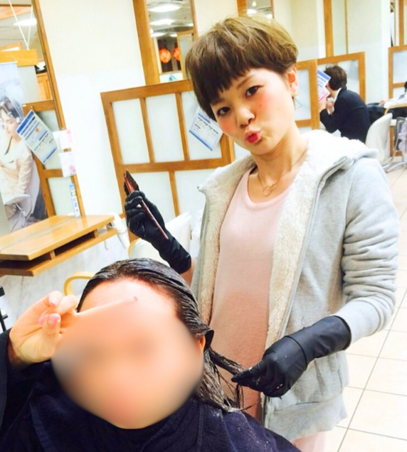
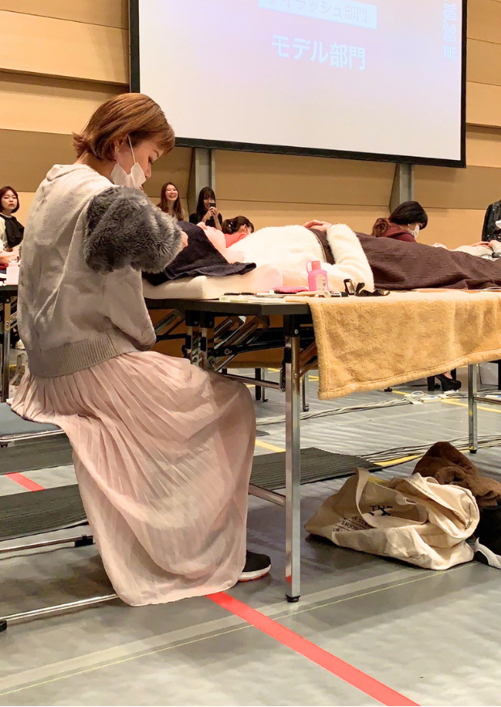
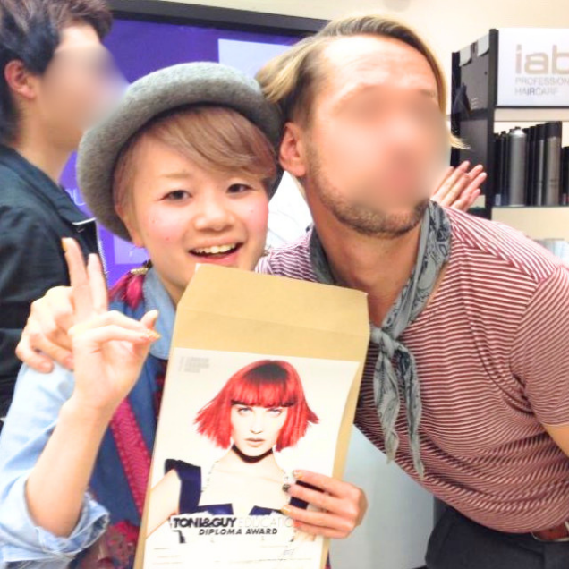
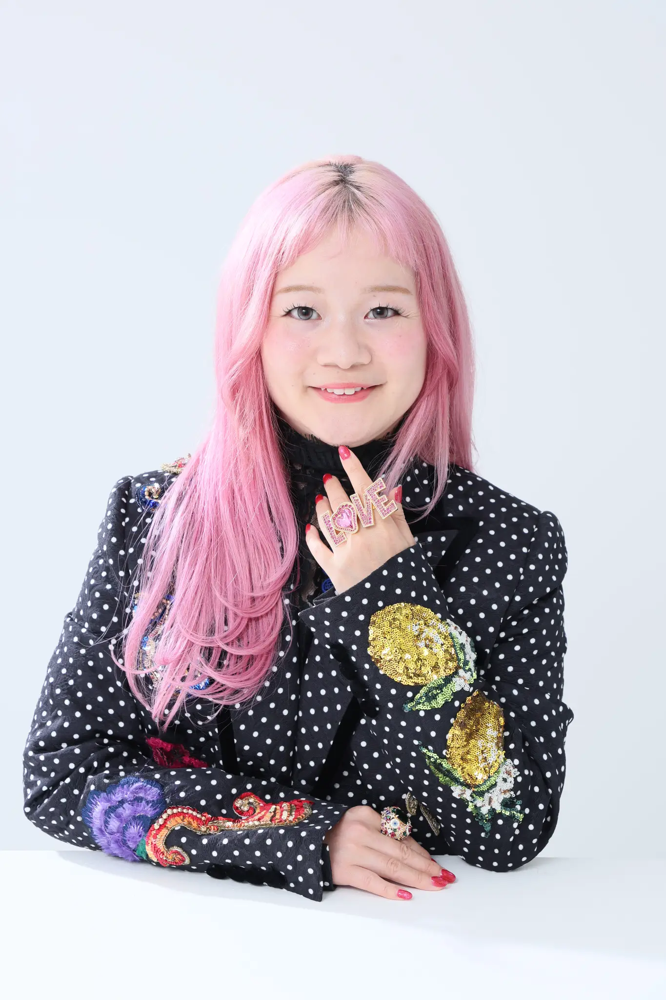

01
MISSION
美容師が、お金を理由に
「好き」を諦めない未来をつくる。
好きで選んだ美容師という仕事を、収入や将来への不安だけで手放してほしくない。お金の知識を通じて、働き方、暮らし方、挑戦するタイミングを自分で選べる美容師を増やします。
お金の不安を、学ぶ力に変える。
知らないことは、努力の不足ではありません。
ただ、学ぶ機会がなかっただけです。
技術、接客、トレンド、集客。美容師は、お客様を笑顔にするために、日々学び続けている仕事です。
チョキプラスは、美容師の働き方や現場への理解を土台に、難しいお金の話を、分かりやすく実生活につながる形で届けます。
好きで選んだ美容師という仕事を、収入や将来への不安だけで手放してほしくない。お金の知識を通じて、働き方、暮らし方、挑戦するタイミングを自分で選べる美容師を増やします。
技術や接客を学ぶように、お金について学ぶことも当たり前になる。自分と家族の未来を守りながら、誇りを持って仕事を続けられる業界を目指します。

投資を始めること自体を目的にせず、制度、仕組み、リスクを理解したうえで、自分で判断できる状態を目指します。


01
02
03
01美容師の技術、努力、誇り、日々の忙しさを、すべての出発点にします。
メリットだけを強調せず、リスク、費用、向き不向きも誠実に伝えます。
専門用語をかみ砕き、日々の選択に生かせる形で届けます。
特定の商品を勧めず、一人ひとりが自分で考え、選ぶ力を育てます。
目先の利益ではなく、仕事、暮らし、家族、将来まで見据えます。
代表自身が美容師・アイリストとして働き、仕事のやりがいと将来への不安の両方を経験しています。
専門用語に頼らず、身近な例を使って、初めての方にも分かる言葉で届けます。
損失の可能性、費用、制度上の制約、向き不向きも含めて学びます。
答えを押しつけず、情報を見極め、自分で選択できる力を育てます。
美容師、アイリストとして技術を磨き、コンテストやステージにも挑戦してきました。お客様と向き合い、現場の喜びも不安も知っているからこそ、美容師の人生に本当に必要な学びを届けたいと考えています。
※上記はご提供いただいた仮原稿に基づく表示です。公開前に集計根拠・媒体情報との照合が必要です。
美容師としての誇りに、
お金を学ぶ力をプラスする。
美容師向け講座、サロン・企業・団体向け金融研修、講演、取材、協業について、お気軽にお問い合わせください。
当社が提供する情報は、NISA・iDeCo、資産形成、FXその他のお金に関する一般的な知識および判断の考え方を提供することを目的としています。特定の金融商品、銘柄、金融機関、通貨ペア等の取引を勧誘・推奨するものではなく、個別具体的な投資判断に関する助言を行うものではありません。
投資には元本割れを含む損失の可能性があります。FXはレバレッジを利用する取引であり、預けた証拠金を上回る損失が生じる可能性があります。最終的な判断および取引は、利用者ご自身の責任において行ってください。